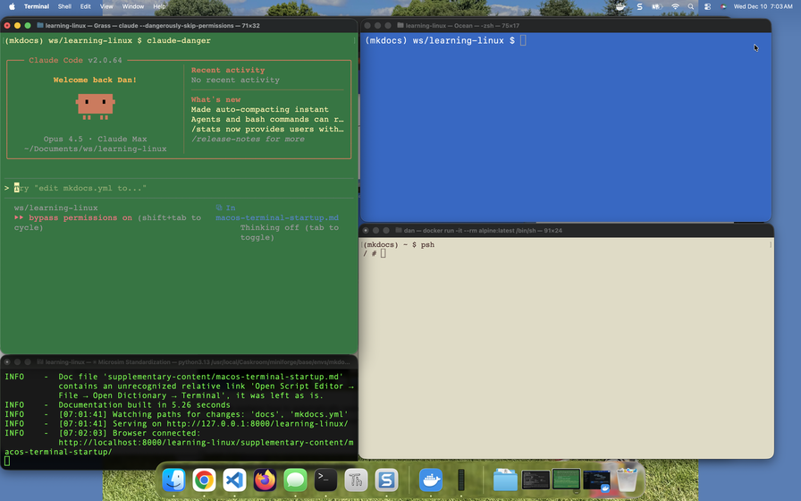

Automating macOS Terminal Windows on Startup

This guide explains how to automatically open and configure multiple Terminal windows with specific profiles, sizes, positions, and commands when you log into macOS.
Overview
Using a combination of shell scripts and AppleScript (via osascript), you can:
- Open multiple Terminal windows automatically
- Apply different Terminal profiles (themes) to each window
- Position and size windows precisely on your screen
- Run startup commands in each window (like launching Claude Code)
- Execute this setup on login
What is osascript?
The osascript command is a command-line tool that executes AppleScript and other Open Scripting Architecture (OSA) languages from the terminal. Apple created AppleScript in 1993 as part of System 7 to provide a natural language-like scripting language that could automate and control Mac applications. Unlike shell scripts that work with files and processes, AppleScript was designed specifically for inter-application communication—allowing users to script the GUI, send commands between apps, and automate complex workflows that span multiple applications. The osascript command bridges the gap between traditional Unix shell scripting and AppleScript, letting you embed powerful GUI automation directly within bash scripts. This is why we use it here: shell scripts alone cannot control window positions or apply Terminal profiles, but AppleScript can communicate directly with Terminal.app to manipulate its windows.
Prerequisites
- macOS (tested on Ventura, Sonoma and Tahoe)
- Terminal.app (built-in)
- Basic familiarity with shell scripting
Terminal Profiles
macOS Terminal comes with several built-in profiles (themes):
| Profile | Description |
|---|---|
| Basic | Default white background |
| Grass | Green text on black background |
| Homebrew | Green text, classic terminal look |
| Ocean | Blue tones |
| Pro | Professional dark theme |
| Red Sands | Warm reddish tones |
| Silver Aerogel | Light gray theme |
| Novel | Sepia/paper-like appearance |
To see your available profiles:
1 | |
Understanding Screen Coordinates
Terminal window positioning uses screen coordinates:
1 2 3 4 5 | |
- Origin (0,0) is the top-left corner of the screen
- X increases moving right
- Y increases moving down
- Menu bar is typically 25 pixels tall
Window Bounds Format
Window bounds are specified as: {left, top, right, bottom}
For example, a window in the top-left quarter of a 1920x1080 screen:
1 | |
Basic Script Structure
Step 1: Create the Script
Create a new file at ~/bin/setup-terminals.sh:
1 2 3 4 5 6 7 8 9 10 11 12 13 14 15 16 17 18 19 20 21 22 23 24 25 26 27 28 29 | |
Step 2: Make It Executable
1 | |
Step 3: Run the Script
1 | |
Complete Example: Three-Window Development Setup
This example creates three terminal windows arranged in a specific layout:
1 2 3 4 5 6 7 8 9 | |
The Script
1 2 3 4 5 6 7 8 9 10 11 12 13 14 15 16 17 18 19 20 21 22 23 24 25 26 27 28 29 30 31 32 33 34 35 36 37 38 39 40 41 42 43 44 45 46 47 48 49 50 51 52 53 54 55 56 57 58 59 60 61 62 63 64 65 66 67 68 69 70 71 72 73 74 75 76 77 78 79 80 81 | |
Running Commands on Startup
The do script command accepts any shell command:
Run a Single Command
1 | |
Run Multiple Commands
1 | |
Change Directory Then Run Interactive Program
1 | |
Run Commands with Environment Variables
1 | |
Running the Script at Login
Method 1: Login Items (Easiest)
- Open System Settings → General → Login Items
- Click the + button
- Navigate to
~/bin/setup-terminals.sh - Select it and click Add
Note: You may need to convert the script to an Application first (see Method 2).
Method 2: Create an Application Wrapper
- Open Script Editor (in Applications → Utilities)
- Enter this code:
1 | |
- Go to File → Export
- Set File Format to Application
- Save as "Setup Terminals.app" in your Applications folder
- Add the app to Login Items (System Settings → General → Login Items)
Method 3: LaunchAgent (Most Reliable)
Create a LaunchAgent plist file:
1 | |
Add this content:
1 2 3 4 5 6 7 8 9 10 11 12 13 14 15 16 17 | |
Load the LaunchAgent:
1 | |
To unload:
1 | |
Finding Your Screen Resolution
To determine your screen dimensions for the script:
1 | |
Example output:
1 | |
For multiple monitors, you'll see multiple resolutions listed.
AppleScript Reference
Key Commands
| Command | Description |
|---|---|
activate |
Bring Terminal to the front |
do script "command" |
Open new window and run command |
do script "command" in front window |
Run command in existing window |
set bounds of front window to {l,t,r,b} |
Position/size window |
set current settings of front window to X |
Apply a profile |
set custom title of front window to "Name" |
Set window title |
settings set "ProfileName" |
Reference a profile by name |
Getting Window Information
To get the current bounds of the front Terminal window:
1 | |
This is useful for figuring out exact positions when designing your layout.
Troubleshooting
Error: "Can't set settings set..."
Cause: Profile name doesn't match exactly.
Solution: List available profiles and use the exact name:
1 | |
Windows Open But Don't Position Correctly
Cause: Screen dimensions in script don't match your display.
Solution: Update SCREEN_WIDTH and SCREEN_HEIGHT variables to match your actual resolution.
Script Works Manually But Not at Login
Cause: The script runs before the GUI is ready.
Solution: Add a delay at the beginning of your script:
1 | |
Permission Denied
Cause: Script isn't executable.
Solution:
1 | |
Terminal Asks for Automation Permission
Cause: macOS security requires permission for scripts to control apps.
Solution: 1. Go to System Settings → Privacy & Security → Automation 2. Allow your terminal or script to control Terminal.app
Tips and Best Practices
-
Use delays between windows - A
sleep 0.5between window creation prevents race conditions. -
Test coordinates manually - Use
get bounds of front windowto find good positions before scripting. -
Keep scripts in ~/bin - Add
export PATH="$HOME/bin:$PATH"to your~/.zshrcfor easy access. -
Version control your scripts - Keep your setup scripts in a git repository for backup.
-
Document your layout - Add ASCII art comments showing your intended window arrangement.